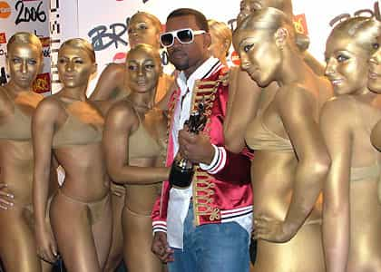
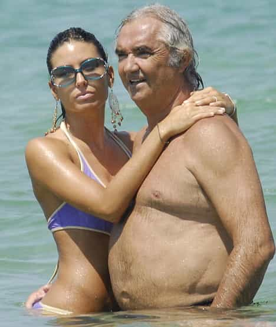
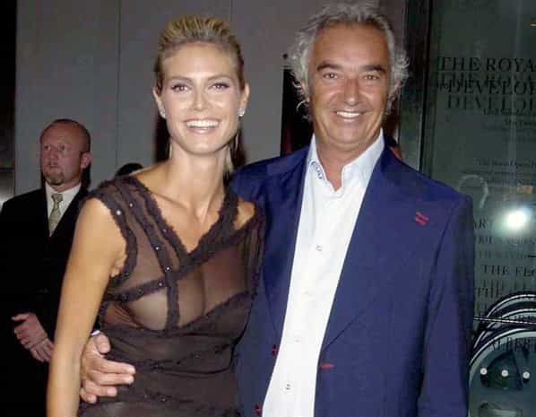
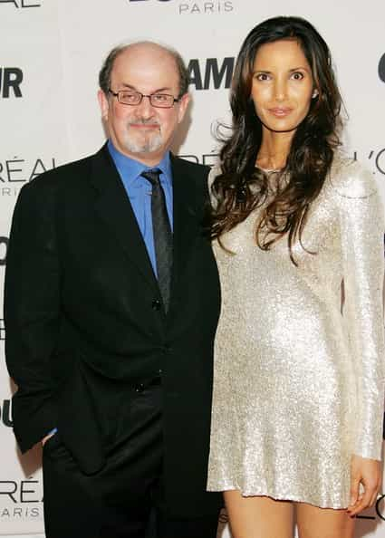
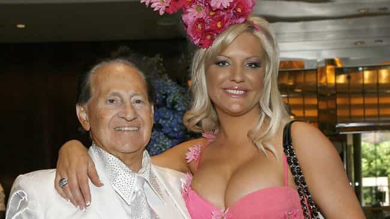

< < < Back
7 Pictures That Show Women With Rich Men Is About More Than Gold Digging – Return Of Kings
After years of bellowing that women only want “respectful,” “nice” partners who treat them well, and never objectify male prospects, feminists are yet to explain the plethora of young, often beautiful (or cosmetically enhanced) women shacking up with rich, famous or otherwise status-endowed men. Most of these men have worked tirelessly for their accomplishments over many years, only to be subjected to the negative judgment of society.
By contrast, you never see older or aesthetically challenged men with younger, reasonably attractive women if they’re bereft of wealth or other success markers. What’s more is that many of these women usually have unremarkable careers or life experiences so far. Those who are “successful” could support themselves anyway, so why the need to pair with a wealthy, famous or powerful man if it’s not biologically programmed?
In the meantime, these older men, aside from George Clooney and a few others, are vilified as creeps or sexists for choosing the proverbial secretary or otherwise younger woman. Sadly, attacking female gold diggers is invariably about identifying individual women who enter into relationships for material gain.
The debate generally says nothing about the compulsive female desire for a male’s “protection” (related to the next point), his resources or the allure of his famed reputation.
Gold diggers are a false focus

A constant lens on gold diggers is beneficial for feminists because it presents the veneer that women seek extensive material or social gain from relationships only in certain circumstances and non-regularly. The stereotype is, additionally, explicit and easier to hate.
This does nothing, however, to help society understand why most women, the “good” and the “bad,” still want men to pay on the first date and why rich, well-connected men, including the many males who inherit wealth, have inordinately more romantic options than men who have to work more diligently to make ends meet with fewer opportunities.
If anything, women assess a man’s value to them much more judiciously than men do a woman’s. And when they seize the man they desire, whether a middle-class doctor or a titan of industry, their choice is backward rationalized as his “great personality, “attentiveness to me” or even “charm and good looks.”
The seven women I have included below come from a range of backgrounds. Some were pre-existing celebrities, others were unknowns. Some are more overtly attention-seeking, others are quieter.
What they show collectively is that the blonde, vacuous, shiny-clothed gold digger is just one piece of the pie. Women from all walks of life crave the financially and socially powerful male, in the many forms that he may take.
Flavio Briatore and Elisabetta Gregoraci

Flavio has been a prolific businessman over the years, including his long-term stint as manager of the Renault F1 Formula One team and its predecessor, Benetton. Elisabetta is an Italian TV personality and model. Even after his disgraced exit from Renault F1, Briatore continues to maintain a diverse portfolio of investments and financial interests. But surely Elisabetta just saw his dreamy eyes, right?
Press representations of Briatore tend to exaggerate his grandpa look and play down his more dapper side (see the next picture).
Flavio Briatore and Heidi Klum

Yes, Flavio makes this esteemed list twice. He actually fathered a child with Heidi, her eldest munchkin Leni. The couple parted after some years together and this elder statesman of Italian business was left to ply his trade elsewhere and enter the sexual marketplace again.
Certainly, Flavio would have accumulated a lot of confidence given the bevy of beauties he has enjoyed, not to mention money he has accumulated. But without the wealth and status, would that confidence count for much in the eyes of 99% of women? And of all the men Heidi could choose, why did she choose a man financially above her?
Salman Rushdie and Padma Lakshmi

Now on their separate paths, the marriage between Britain’s most infamous author and Ms. Lakshmi demonstrates that female lust for power, money, and status goes beyond businessmen and sportsmen. Whereas Briatore had the swagger of being a sporting team’s head honcho, Salman hails from the nerdier corner of the older-man-younger-woman world.
The regularly taken scribe of The Satanic Verses has a history with younger, more aesthetically pleasing females. All credit to him, but would this bespectacled lothario ever have been on Lakshmi’s radar without his literary credentials and the wealth and fame it brought him? Salman’s more recent novels aren’t as eye-catching as his magnum opus but the news about him is more often about him being with a younger woman, not his still lauded career.
Jason and Amanda Dufner

The age gap between the recently divorced Dufners is a paltry decade or so, practically making them twins in the money-power-status playbook. Amanda used her marriage to the successful golfer to catapult her social media career, which basically consists of her posing on Instagram at locations and with items paid for by Jason.
In addition to the presumably millions he spent on her during their time together, she received a divorce settlement worth more than the vast majority of people earn in their lifetimes. All without working a single day! Jason is seen as the awkward, primitive, and inelegant ex-husband as Amanda is celebrated as a vivacious, seemingly “charming” belle.
Hugh Hefner and Holly Madison

Madison spent years feigning devotion towards and smitten-like bliss with Hefner. After they split, during which time she was one of usually three girlfriends, she has persistently parlayed a career out of attacking the life she “suffered” with Hugh.
So why didn’t she leave after a week? Her recent book has complained about the uncleanliness of the Playboy Mansion and other First World criticisms, all of which reek of Relevance Deprivation Syndrome (RDS). Hugh continues to be maligned as the controlling, unresponsive ex-boyfriend of the poor, deprived Holly.
Geoffrey Edelsten and Brynne Gordon

Although the (literal) bovine Dairy Queen of this lineup, Gordon must’ve seemed like the modern-day reincarnation of a beautiful Virgin Mary for ex-sports team owner Edelsten. Lavished with gifts and all manner of financial indulgences, which were retrospectively reinterpreted as his “attentiveness” to her, Brynne packed her bags (but still lived in his palatial penthouse) just after Edelsten was declared bankrupt in the US. What a coincidence!
This American gal has resorted to employing the fearsome underworld debt collector Mick Gatto to retrieve her “well-earned” $10 million divorce settlement. Gordon is widely loathed, like Edelsten, but has enough fans to be making big money as a “socialite.” What did Edelsten gain, though?
Geoffrey Edelsten and Gabi Grecko
Lacking the long-term international profile of Briatore, Edelsten is nonetheless a repeat achiever, too. Grecko is generally sane or prudish once every full moon, when she’s not rocking up to funerals with her tits out, or walking naked down a busy Melbourne street for ten minutes (that’s not a joke).
Sensing the opportunity for more social media money and brain-dead followers, she was happily taking photos featuring her cleavage after an alleged miscarriage of her and maybe Geoffrey’s unborn child. Classy girl. Again, Geoffrey is pilloried, getting only a modicum of the attention and none of the money Grecko is making from the relationship.
Always be wary but accept the rules of the game
Realizing the undying allure of power, money and status for women (and the corresponding SJW disdain of men’s desire for fertile females) is the most cogent red pill lesson you will ever learn. In most ways, any other red pill teaching is merely a corollary of this Super Law of Nature. Heed it well.
Like the surfer Kelly Slater, it’s a wave you can ride to great heights. But it’s also the cause of many a man’s painful downfall. Always be careful of those sharp rocks beneath the shallow waters, boys.
Read More: Top 10 Pictures From The Growing “Women Against Feminism” Movement